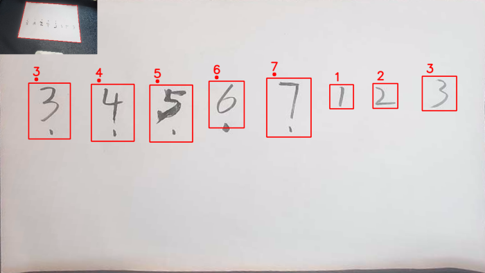
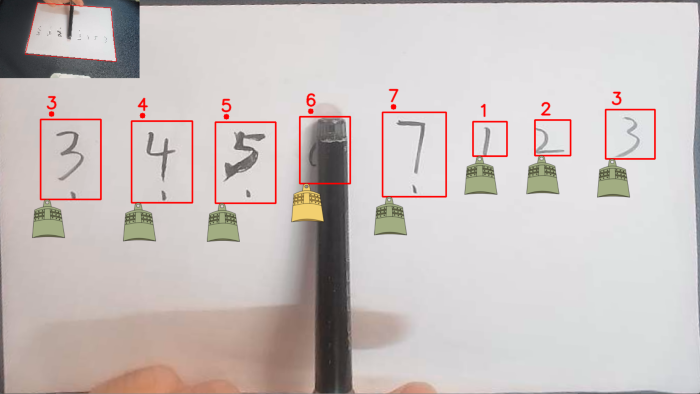

有哪些打击乐？
目前平台实现的打击乐有编钟。
如何使用？
• 依据readme.md文件运行程序进入软件
•
在真实的编钟演奏中，演奏者需要一个较大的场地以及一套复杂且沉重的编钟器具，这种演奏方式不仅对空间要求高，还需要专业的演奏技术。然而，我们的系统通过创新的方法将传统编钟的演奏环境大大简化，将演奏场地缩小到一张桌面上的A4纸，并将编钟的发声组件转换
为纸面上的简谱符号。这种改进不仅显著降低了演奏的复杂性，还降低了演奏门槛，使得更多的人能够轻松体验编钟演奏的乐趣。
以编钟为例展示使用流程
一、演奏平面聚焦
系统首先通过网络摄像头实时采集桌面上的画面，摄像头的任务是捕捉A4纸上的所有细节。为了确保系统能够准确识别和处理图像，系统需要专注于A4纸的图像，并将其作为后续演奏的参照物。
系统获取了图像后，接下来的步骤是通过透视变换算法自动聚焦到A4纸的图像上。这一过程确保了图像的几何变换被准确校正，从而为后续的音符识别奠定了坚实的基础。通过透视变换，系统能够消除由于拍摄角度不同造成的图像失真，保证了图像中A4纸的真实比例和位置，从而提高音符识别的准确性。

二、音符识别
系统采用卷积神经网络（CNN）对校正后的A4纸图像进行深度分析，以识别纸面上的手写音符。CNN模型经过训练能够高效地从图像中提取特征，并准确识别出音符的位置和类型。通过这一过程，系统能够了解用户希望演奏的音调，并将其转化为相应的音频指令。
例如，用户在A4纸上手写的音符会被系统识别为特定的编钟音调，系统将根据这些识别结果调用对应的音频资源。
三、打击模拟
识别出A4纸上的音符之后，系统会在音符的位置附件绘制编钟的图片。用户可以使用任意深颜色的工具“敲击“A4纸上的手写音符，系统会通过图像识别技术确定用户的操作，模拟敲击效果，即改变编钟图片颜色，并调用相应的音频文件，实时生成所需的编钟声音，模拟出真实编钟演奏的效果。
这种虚拟编钟系统不仅可以方便地在小型桌面环境中实现编钟演奏，还可以减少传统编钟演奏所需的物理空间和器具。
